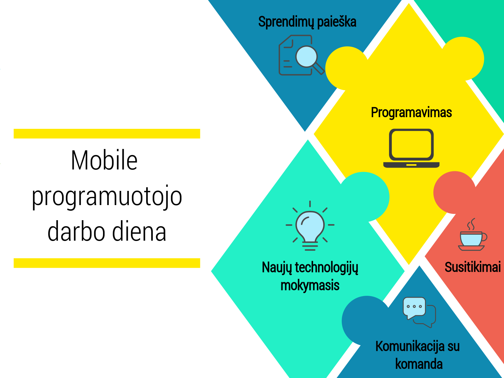

Mobile programuotojas
Mobile programuotojas yra atsakingas už mobiliųjų programėlių kūrimą. Būnant šios specialybės atstovu galima spręsti įvairias gyvenimiškas problemas, sukuriant programėlę, kuri padėtų kontroliuoti biudžetą, praneštų apie žemės drebėjimą ar kontroliuotų mūsų miego valandas, todėl šioje specialybėje net ir netikėčiausios idėjos gali būti įgyvendintos. Mobile programuotojas dirba su front end ir back-end programavimu bei dizainu.
